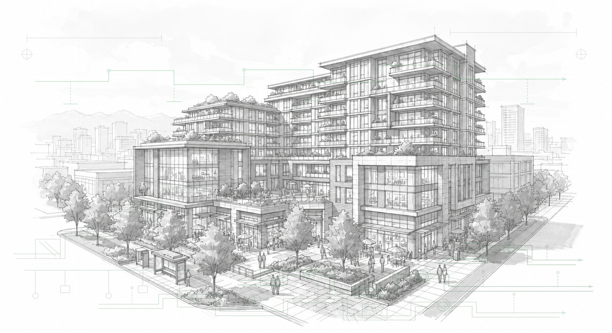
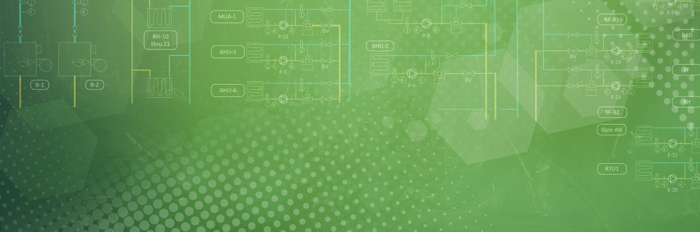

Building Energy Efficiency
Rede helps public sector and multi-site organizations find and recover unnecessary energy costs through better data, smarter decisions, and engineering expertise that stays engaged for the long term.
Total annual cost savings
$480K
14% lower vs baseline
Total energy savings
2.7M kWh
11% lower vs baseline
Monthly cost trend
Building Energy Efficiency
Rede helps public sector and multi-site organizations find and recover unnecessary energy costs through better data, smarter decisions, and engineering expertise that stays engaged for the long term.
Total annual cost savings
$480K
14% lower vs baseline
Total energy savings
2.7M kWh
11% lower vs baseline
Monthly cost trend
Building Energy Efficiency
Rede helps public sector and multi-site organizations find and recover unnecessary energy costs through better data, smarter decisions, and engineering expertise that stays engaged for the long term.
Total annual cost savings
$480K
14% lower vs baseline
Total energy savings
2.7M kWh
11% lower vs baseline
Monthly cost trend
Public sector portfolios we have worked with
The problem
Utility bills get processed, budgets get approved, and facilities teams stay busy putting out fires. But nobody is tracking whether the buildings are actually performing well, or what it would take to improve them. The result is unnecessary cost and emissions that compound quietly, year over year.

Energy management falls to whoever has time, which means it does not get done properly. Teams stay reactive, responding to problems instead of preventing them.
Utility data lives in accounts payable and arrives from multiple vendors in different formats. Consolidating it takes real effort before it tells you anything useful.
Without benchmarking there is no way to know whether performance is good or bad. Budgets absorb the difference, and nobody sees where the money is going.
Rede closes that gap.
$2.94M
Identified for one Western Canadian school district
9.5%
Average cost reduction for schools
2008
Working with public sector portfolios since
What clients say
Before Northland started working with Rede, we had no energy management plan at all. We recognized quickly that we can save money with an energy management program.
The Rede team is all about proactively implementing energy solutions. They see a gap and they take care of it.
For people like myself, money talks. If we can engage someone like Rede to find inefficiencies within our facilities, then we are able to address them.